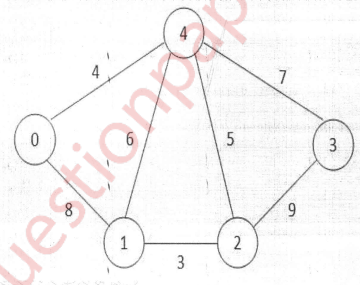

DSA
Explain linear and non-linear data structures.
Linear Data Structures
Linear data structures are those in which data elements are arranged in a linear sequence, such as arrays, linked lists, stacks, and queues. These data structures can be traversed in a linear fashion, meaning that each element can be visited by visiting the elements before it and after it.
Some characteristics of Linear Data Structures are:
- Elements are stored in contiguous or adjacent memory locations
- Elements can be traversed sequentially
- Elements are stored and accessed in a linear fashion
- Examples: Arrays, Linked Lists, Stacks, Queues
Non-Linear Data Structures
Non-linear data structures, on the other hand, are those in which the data elements are not arranged in a linear sequence. These data structures are organized in a hierarchical or a network-like fashion, and can be traversed in a non-linear fashion. Examples of non-linear data structures include trees, graphs, and hash tables.
Some characteristics of Non-Linear Data Structures are:
- Elements are not stored in contiguous memory locations
- Elements can be traversed in a non-sequential manner
- Elements are stored and accessed in a non-linear fashion
- Examples: Trees, Graphs, Hash tables
What is depth, height and degree of Binary tree?

What is recursion? State its advantages and disadvantages?
Recursion is a technique in computer science where a function calls itself as a part of its execution. This allows for a problem to be broken down into smaller, manageable sub-problems, making it easier to solve.
Advantages
- Simplicity: Recursive functions can often be simpler and more elegant than their iterative counterparts.
- Reusability: Recursive functions can be used to solve similar problems in different parts of a program, leading to code reuse.
- Modularity: Recursive functions can be broken down into smaller, more manageable sub-problems, making it easier to understand and debug the code.
Disadvantages
- Space complexity: Recursive functions may use up a lot of memory due to the function call stack, leading to stack overflow errors.
- Performance: Recursive functions can be slower than their iterative counterparts, especially for large inputs.
- Risk of infinite loops: If not implemented correctly, a recursive function can lead to infinite recursion, causing the program to crash.
Explain asymptotic notations
Asymptotic notation is a way to describe the performance of an algorithm in terms of the size of the input. It is used to express the limiting behavior of a function when the argument tends towards a particular value or infinity.
There are three commonly used asymptotic notations:
- Big O notation (O(n)): Big O notation expresses the upper bound of an algorithm's time complexity, or the maximum amount of time the algorithm will take to complete. It describes the worst-case scenario.
- Big Ω notation (Ω(n)): Big Ω notation expresses the lower bound of an algorithm's time complexity, or the minimum amount of time the algorithm will take to complete. It describes the best-case scenario.
- Big Θ notation (Θ(n)): Big Θ notation expresses the tight bound of an algorithm's time complexity, or the average amount of time the algorithm will take to complete. It describes the average-case scenario.
Write an algorithm for implementing queue using array.
Step 1: Declare an array "queue" of size "n" to store the elements in the queue.
Step 2: Declare two variables "front" and "rear" and initialize them to -1.
Step 3: To insert an element in the queue, check if the queue is full (if rear = n-1). If it is, then write "Queue Overflow" and exit.
Step 4: If the queue is not full, increment "rear" by 1 and insert the element at the position "rear" in the array "queue".
Step 5: To delete an element from the queue, check if the queue is empty (if front = -1 and rear = -1). If it is, then write "Queue Underflow" and exit.
Step 6: If the queue is not empty, increment "front" by 1 and delete the element present at the position "front" in the array "queue".
Step 7: To display the elements in the queue, check if the queue is empty (if front = -1 and rear = -1). If it is, then write "Queue is empty" and exit.
Step 8: If the queue is not empty, traverse the queue from front to rear and print the elements present in the array "queue".
Step 9: Exit
Write an algorithm for merge sort and comment on its comlexity.
- Step 1: If the number of elements in the list is less than or equal to 1, return the list (base case)
- Step 2: Divide the list into two equal parts.
- Step 3: Recursively sort the left half of the list using merge sort.
- Step 4: Recursively sort the right half of the list using merge sort.
- Step 5: Merge the two sorted halves of the list together by comparing the first element of each half and adding the smaller element to the final list. Repeat this process until one of the halves is exhausted.
- Step 6: Return the final sorted list.
The time complexity of merge sort is O(n log n) in the worst, average and best cases. It is considered to be an efficient sorting algorithm due to its divide-and-conquer strategy and the linear time complexity of the merge operation. However, it has a high space complexity as it requires an extra space to store the left and right sub-lists.
Explain BFS and DFS algorithm with example.
DFS
- It starts at the tree root (or some arbitrary node of a graph) and explores as far as possible along each branch before backtracking.
- It uses Stack data structure to remember to get the next vertex to visit from the stack, and mark the current vertex as visited.
Example: Consider the below graph, DFS traversal of the above graph will be: 0 1 3 4 2
0 / \ 1 2 / \ 3 4- More example: https://www.youtube.com/watch?v=iaBEKo5sM7w
BFS
- It starts at the tree root (or some arbitrary node of a graph) and explores the neighbor nodes first, before moving to the next level neighbors.
- It uses Queue data structure to remember to get the next vertex to visit from the queue, and mark the current vertex as visited.
Example: Consider the below graph, BFS traversal of the above graph will be: 0 1 2 3
0 / \ 1 2 / \ 3 4
Traverse the following binary tree into preorder, inorder, postorder by giving its algorithm.
- In-order: B D A G E C H F I
- Pre-order: A B D C E G F H I
- Post-order: D B G E H I F C A
What is Binary search tree. Construct Binary search tree for following elements.
13, 3, 4, 12, 14, 10, 5, 1, 8, 2 7, 9, 11, 6 9
What is minimum spanning Tree? Draw the MST using kruskal's and prim's algorithm and find out the cost with all intermediate steps.
Minimum Spanning Tree (MST) is a subset of the edges of a connected, undirected graph that connects all the vertices together, without any cycles and with the minimum possible total edge weight. There are two famous algorithms to find the MST in a graph - Kruskal's algorithm and Prim's algorithm.

Using Kruskal's algo:
Cost is 19
Using Prim's algo:
- Choose an arbitrary start vertex.
- Keep including connected min edges[with no cycles].
- https://youtu.be/5M7bOXrn54A
 Cost is 22
Cost is 22